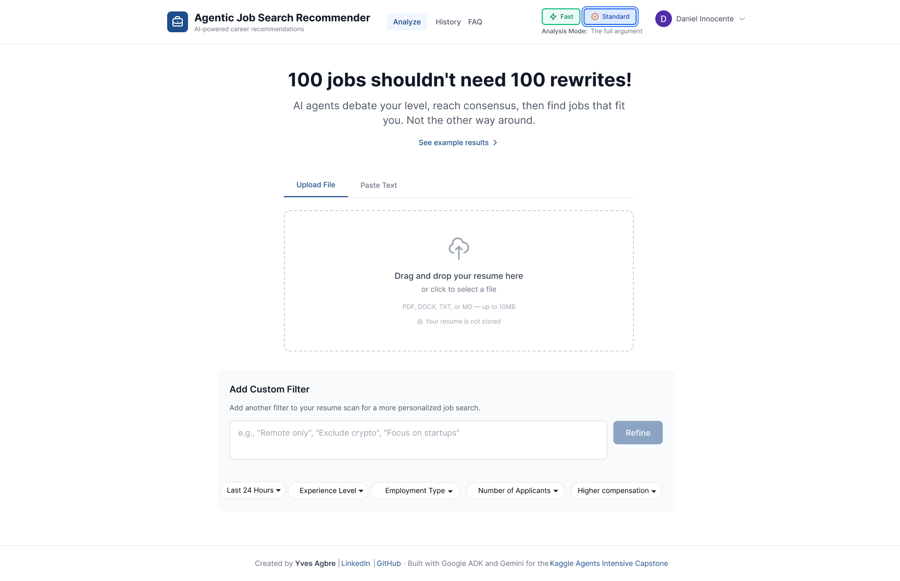

Overview
Arbiter helps early-career users understand fit, level, and next steps.
The product already had a strong AI concept. The UX opportunity was making the result easy to interpret, easy to adjust, and useful enough to guide a user's next move.
Product context
Arbiter analyzes a resume, estimates a user's career level, and recommends roles that may fit.
UX focus
I studied how users interpreted the AI output, where trust broke down, and what controls they expected.
Design outcome
The redesign makes recommendations easier to refine and reframes results around action, not just analysis.
Problem
The core issue was not the AI output. It was what users could confidently do with it.
Users were receiving valuable information, but the interface did not yet organize that information around the decisions they needed to make.
Interpret the result
Resume analysis, career level, agent debate, and job matches competed for attention, making the main takeaway hard to find.
Trust the reasoning
The system showed how it worked, but the explanation could feel more like a technical log than guidance for a job seeker.
Refine the match
Users needed obvious ways to adjust recommendations by location, compensation, experience level, role type, and other real constraints.
Move forward
Career level was useful only if users could understand why they were placed there and what would help them progress.
Before / after
The redesign turns AI output into decisions users can adjust.
The original product already had a strong technical idea. My redesign focused the experience around the decisions users needed to make: what constraints matter, what level they are, and what to do next.
Before
Results competed with the next step.

- Issue: The interface presented a lot of signal at once without clearly prioritizing user decisions.
- Effect: Refinement felt secondary, even though it was central to improving match quality.
After
Refinement became a control surface.

- Choice: Turn vague feedback into visible controls that map to job-search decisions.
- Why: The AI output becomes something users can steer instead of something they only receive.
Before
Personalization came too late.

- Issue: Real constraints like location, compensation, and role type were not part of setup.
- Effect: Users had to wait for results before seeing whether recommendations matched their situation.
After
Filters moved before the scan.

- Choice: Add plain-language filters before analysis so users can shape recommendations around real limits.
- Why: Earlier control makes the AI feel more useful, predictable, and accountable.

Process detail
Keep transparency visible, but do not let it overpower the user's goal.
I treated the agent pipeline as supporting context: helpful for trust, but less important than the user's level, fit, and next action. That framing keeps the AI explainable without making the page feel like a technical log.
Research findings
I used interviews and usability testing to identify what career clarity actually meant.
Instead of linking out to a PDF, this section summarizes the findings that directly shaped the redesign decisions.
Users wanted reasons, not just recommendations.
A job match only felt useful when users could understand why it fit, what evidence the AI used, and what tradeoffs were behind the recommendation.
Career level needed context.
A level label helped only when users could see why they were placed there and what would help them move toward stronger roles.
Control changed trust.
Users were more willing to trust AI feedback when they could adjust constraints like location, compensation, experience level, and role type.
Career pathway
The redesign also reframes recommendations as forward motion.
Beyond improving the scan flow, I explored how Arbiter could help users understand how their current level connects to the roles they want next.

- Choice: Shift from a static score to a clearer view of where the user stands.
- Why: Recruiters and job seekers both need the product to communicate growth, not just classification.
- Result: The concept supports a more guided career-planning experience without adding more noise to the scan page.
FAQ page
Designing clarity around the AI so users don't get lost in the output.
Users kept asking the same questions during testing: What even is an AI Agent? and What do these job levels actually mean? I proposed and designed a FAQ page accessible from the top nav that answers these upfront, in plain language.


Solution
I reframed Arbiter around fit, clarity, and forward motion.
Make the AI easier to steer
Custom filters and plain-language refinement so users can shape recommendations around their real constraints.
Separate signal from system noise
Keep agent debate visible, but prioritize the user's final level, role fit, and recommended next steps.
Explain career level in context
Help users understand whether a role is a best fit, stretch goal, or future pathway. Not all results are equivalent.
Connect jobs to career progress
Use outputs to show what skills or experiences could move the user toward the roles they want next.
What this shows
I design AI interfaces by asking what users can confidently do with the output.
Arbiter had a compelling technical premise. My UX work focused on the human side: whether users could understand the reasoning, adjust the recommendations, and leave with a clearer career path. This project reflects how I approach AI products: research the user's decision process, reduce ambiguity, and turn complex system intelligence into concise, actionable guidance.